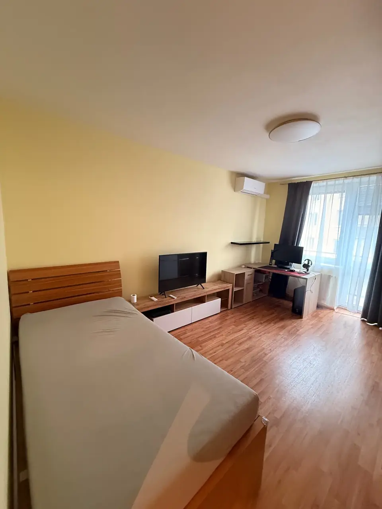
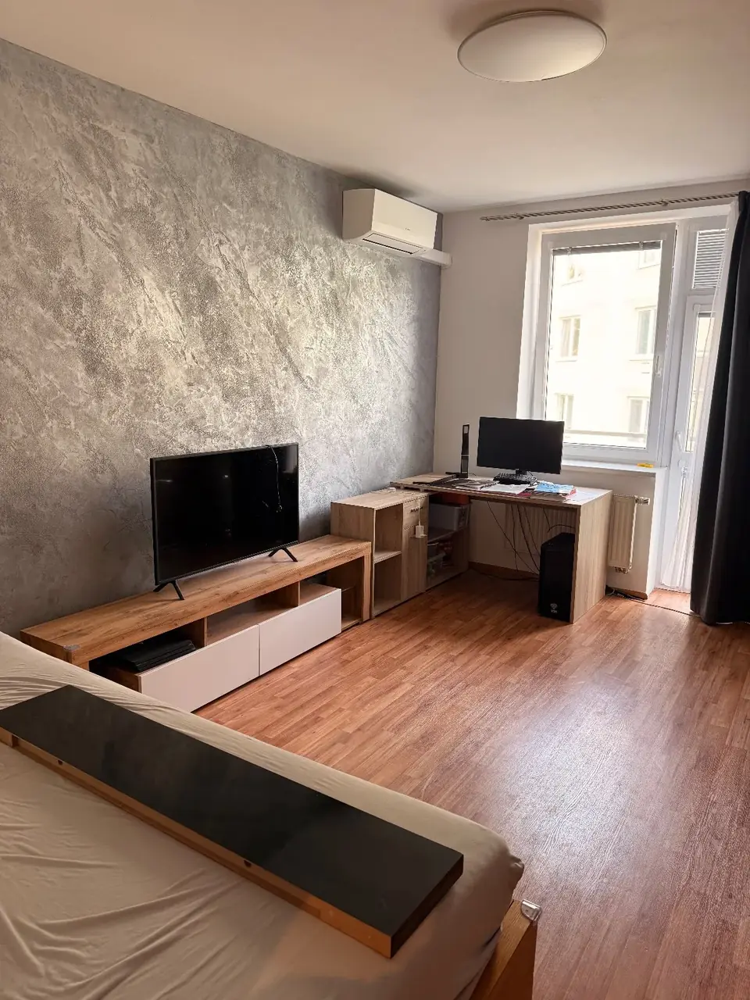
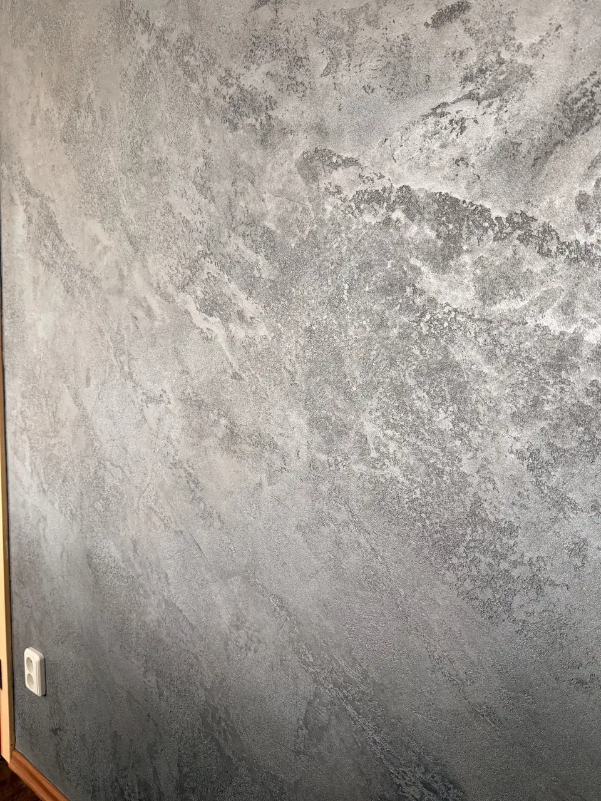
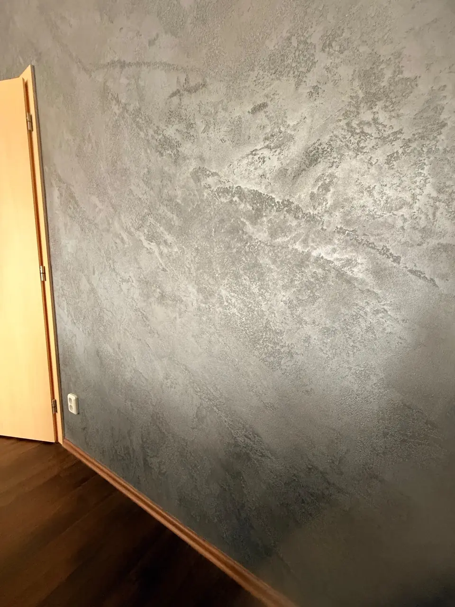
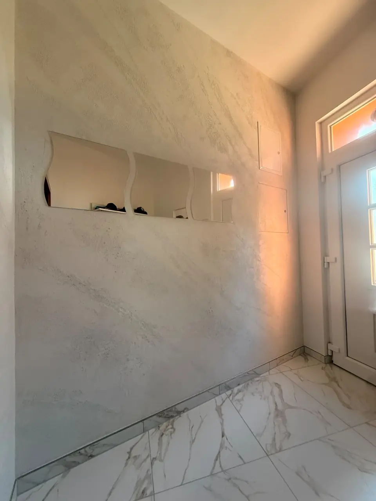
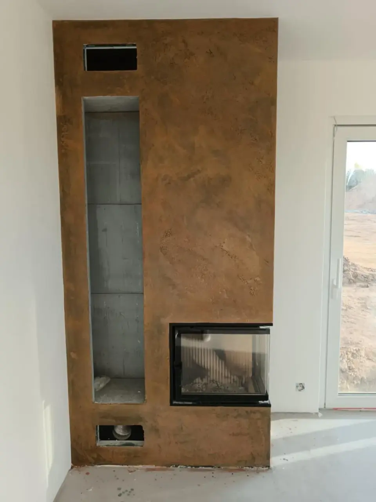
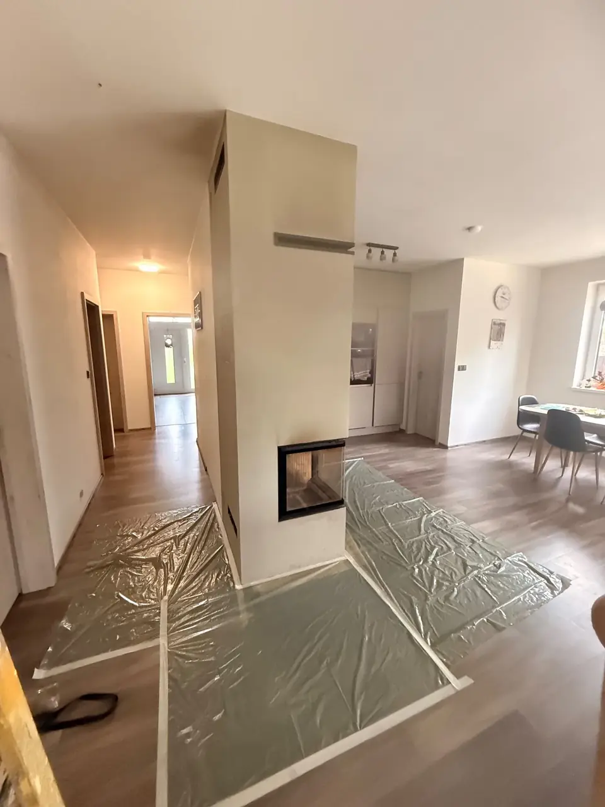
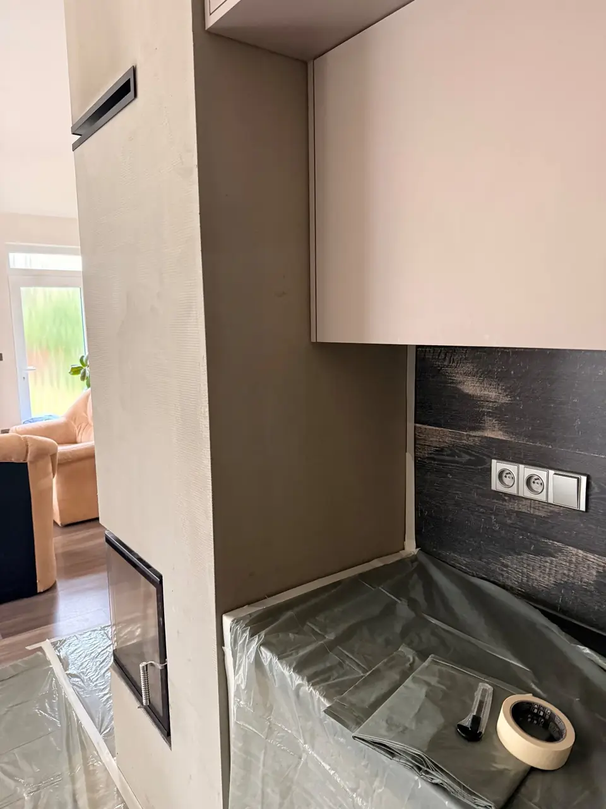
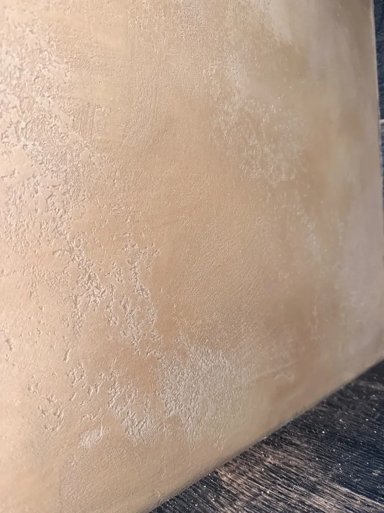
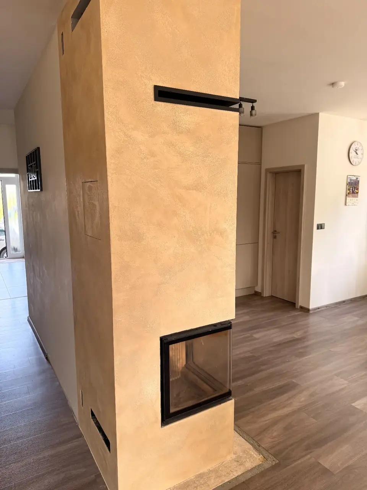

Betonová stěrka Brno
Stěna, která vypadá jako beton. Stěrku uděláme na klíč: poradíme s odstínem, připravíme podklad, naneseme ji ručně a po práci uklidíme. Nejsme prodejna materiálu.
- 5,0 z 29 recenzí na Googlu
- Ozveme se do 24 hodin
- Brno a okolí do 20 km


PoPředDekorativní stěrka · Brno · Medlánky. Posuňte pásku a porovnejte stav před a po.
Šedé a betonové stěny z našich zakázek
Každá ručně dělaná stěrka má vlastní kresbu. Fotky jsou z našich zakázek, v galerii webu vedené jako dekorativní stěrka.





Vzorník z našich zakázek
Klikněte na povrch a uvidíte celou stěnu. Žádné fotky z katalogu. Odstín a kresbu s vámi doladíme na místě.
Šedá s výraznou kresbou
Tmavší i světlejší místa dělá ruka, ne šablona. Na velké stěně v ložnici.
Chci cenu stěrkyKrb v Kupařovicích krok za krokem
Jedna zakázka, čtyři fáze. Podlaha a okolí krbu zůstaly po celou dobu pod fólií.
Vybereme vzhled
Probereme barvu, strukturu a techniku. Pro cenu stačí fotka stěny a rozměry.
před prací
Zakryjeme a připravíme
Ověříme rovinnost a soudržnost podkladu, okolí zakryjeme.
před prací
Naneseme stěrku ručně
Stěrku naneseme ve vrstvách a ručně vytvoříme kresbu.
po práci
Dotáhneme detaily
Rohy a napojení. Při předání vysvětlíme, jak o povrch pečovat.
po práci
Co je v ceně stěrky
Cenu počítáme podle skutečné plochy a techniky. Zakrytí, příprava podkladu i úklid jsou v ceně, kterou vám předem potvrdíme.
- Výběr odstínu a kresbyProjdeme inspiraci a vybereme vzhled podle světla a okolních materiálů.
- Kontrola a příprava podkladuOvěříme rovinnost a soudržnost stěny a určíme, jakou přípravu potřebuje.
- Stěrka ručně ve vrstváchRučně vytvoříme kresbu, dotáhneme rohy a napojení.
- Zakrytí okolí a úklidOkolí zakryjeme a po práci uklidíme.
- Péče o povrchPři předání vysvětlíme, jak povrch čistit a čemu se vyhnout.
- Materiál[doplnit: je materiál stěrky v ceně?]
Kolik stojí betonová stěrka
[doplnit: od … Kč/m² práce, doplní majitel]
Pošlete fotku stěny a přibližné rozměry a připravíme nezávaznou cenu. [doplnit: ceny s DPH, nebo bez?]
Chci cenu stěrky- Plocha a tvar stěnymetry čtvereční, rohy a detaily
- Stav podkladurovinnost, soudržnost a opravy
- Technika a efektbetonová stěrka, benátský štuk, marmorino
- Prostředíobytný prostor, krb nebo koupelna
Co píšou zákazníci o stěrkách
„S realizací betonové stěrky na našem krbu jsme maximálně spokojeni. Práce byla odvedena naprosto precizně, detaily a rohy jsou dotažené k dokonalosti. Krb teď vypadá luxusně a stal se dominantou celého obývacího pokoje. Firmu Tři Mistři i pana řemeslníka Honzu mohu pro jeho profesionalitu a smysl pro detail všem vřele doporučit!“
★★★★★ Oksana F., recenze na Googlu
Recenze přebíráme doslova, jen bez emoji. Všechny jsou na profilu firmy na Googlu.
Skvělá zkušenost s touto firmou při realizaci dekoračních stěrek. Borci odvedli perfektní a hlavně čistou práci. Se vším poradili a výsledek vypadá opravdu moc hezky. Oceňuji skvělou komunikaci a dodržení termínu. Určitě doporučuji.
S pány mám skvělou zkušenost. Krásně nám v rámci rekonstrukce vymalovali byt. V ložnici na naše přání udělali nádhernou malířskou stěrku. Všem doporučuji!
Moc rádi doporučujeme Honzu a Davida! Dělali nám doma výmalbu a stěrku a s výsledkem jsme opravdu moc spokojení. Oba jsou šikovní, pečliví a je vidět, že své práci rozumí. …
Musím chlapy pochválit, malovali nám celý dům a na část dělali stěrku, odvedli kvalitně a velmi zodpovědně práci. Super rychlost, pečlivost a samozřejmě si po sobě uklidili.
Skvěle odvedená práce, výborná komunikace, spolehlivost. Provedené práce, nové omítky, výmalba, stěrka. Všechno proběhlo podle našich přání. Můžu doporučit.
Kolik stojí betonová stěrka?
Cena závisí na ploše, stavu a rovinnosti podkladu, technice a prostředí. Pošlete fotku stěny a přibližné rozměry a připravíme nezávaznou cenu.
Prodáváte i materiál na stěrky?
Ne, děláme realizace. Stěrku vám naneseme na místě. [doplnit: potvrdit, že materiál samostatně neprodáváte]
Uděláte stěrku i na krb?
Ano, stěrky jsme dělali i na krby. Pošlete fotku a rozměry, podklad posoudíme.
Hodí se betonová stěrka do koupelny?
Záleží na podkladu a kontaktu s vodou. Vhodnost pro sprchový kout posoudíme individuálně. Přes vhodné obklady nabízíme mikrocement.
Jak dlouho stěrka trvá?
Stěrka se nanáší ve více vrstvách a každá musí zaschnout. Délku práce potvrdíme spolu s cenou.
Betonová stěrka, nebo benátský štuk?
Betonová stěrka má matnější, surovější kresbu. Benátský štuk a marmorino jsou hladší a pracnější. Poradíme podle fotek prostoru.
Jak se o stěrku starat?
Při předání vysvětlíme, jak hotový povrch čistit a čemu se vyhnout, aby dlouho vypadal dobře.
Pošlete fotku stěny, zbytek vyřešíme
Nacenění je zdarma a nezávazné. Termín, který domluvíme, dodržíme.
+420 774 927 182- Střed
- Žabovřesky
- Královo Pole
- Líšeň
- Bystrc
- Bohunice
- Židenice
- Komín
- Starý Lískovec
- Modřice
- Šlapanice
- Kuřim
- Rosice
- Slavkov u Brna